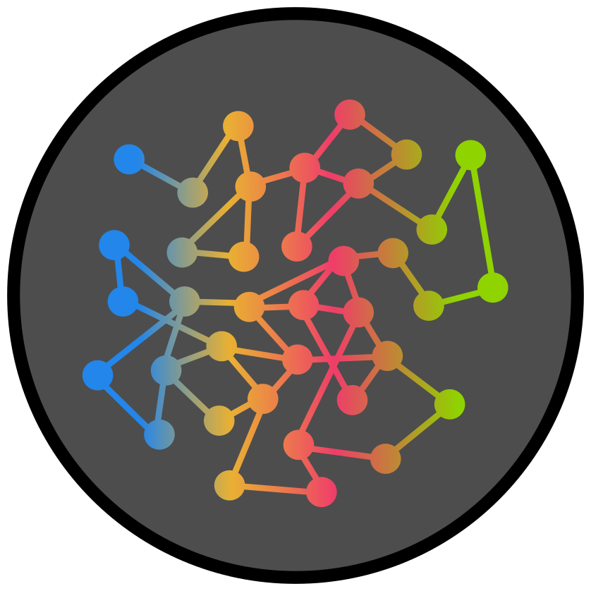

GARRIDO-RODRIGUEZ LABTranslational Systems Biology
We aim to transform large-scale molecular data into actionable biomedical knowledge. We develop and apply computational approaches to model complex biological systems, studying signal processing from a protein-centric perspective, with a particular focus on understanding how cells respond to therapeutic perturbations, process environmental signals, and communicate with their surroundings, generating testable hypotheses and predictive models to inform translational research and therapeutic decision-making.
Our Research
Studying signal transmission with LC-MS/MS
We develop and apply scalable LC-MS/MS-based proteomics and phosphoproteomics workflows to capture molecular snapshots of biological samples under basal and perturbed conditions, gaining quantitative insight into signaling pathways, cellular states, and treatment-induced molecular responses.
Integration with structured biological knowledge
We integrate large-scale molecular readouts, including genomics, transcriptomics, proteomics, phosphoproteomics, and metabolomics, with pathways, regulatory networks, and functional annotations to improve interpretation and prioritize hypotheses for experimental follow-up.
Predictive modeling of perturbations
Our long-term goal is to build accurate, scalable, and interpretable models that simulate perturbations in biological systems, learning from growing perturbational datasets to predict how cells and tissues respond to drugs, genetic alterations, and environmental change.
Principal investigator
Martín Garrido-Rodriguez
IMIBIC (Maimonides Biomedical Research Institute of Córdoba), and the University of Córdoba